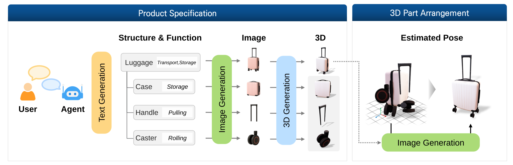
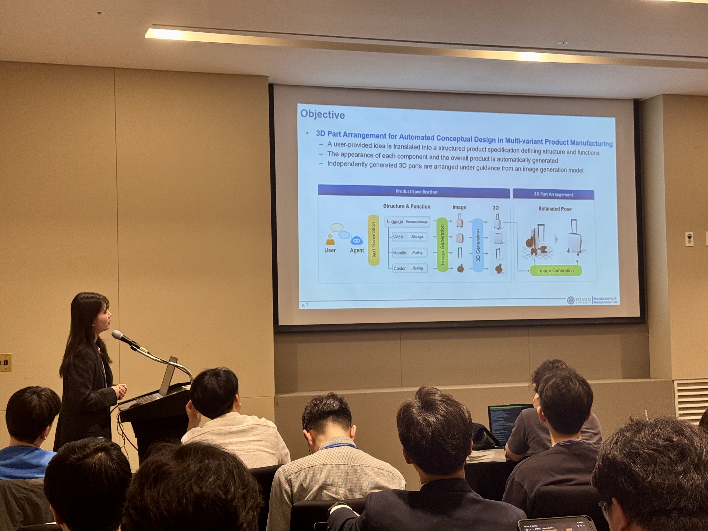

Conference
3D Part Arrangement for Automated Conceptual Design in Multi-variant Product Manufacturing
From user requirements to generated parts and their 3D arrangement for conceptual product design.
Overview
This work explores automated conceptual design for products with multiple variants, connecting user requirements with generated components and their arrangement in 3D.
Key idea
Connect product specification, part generation, and spatial arrangement in one design workflow. The framework uses a luggage example to illustrate the roles of the case, handle, and casters.
Describe the product
Translate a user’s idea into a specification of the product’s structure and functions.
Generate parts
Generate component images and corresponding 3D part assets.
Arrange in 3D
Estimate the part arrangement with guidance from an image generation model.
Method
The framework moves from a structured product specification to part generation and 3D arrangement. The diagram follows this sequence from the initial user input to the estimated part poses.

Results
At the conference
Presented at the KSPE Spring Conference in May 2026 and recognized with the Outstanding Presentation Award.
